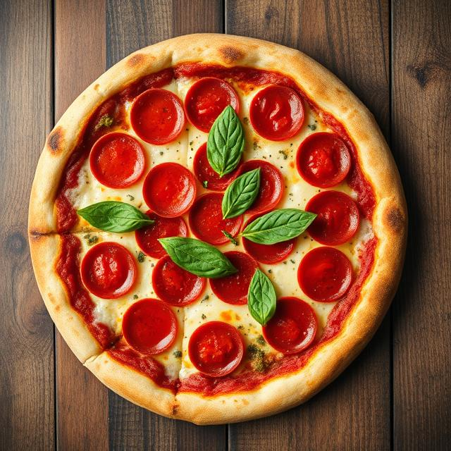

Pepperoni Pizza

Description
This is a recipe for a Pepperoni Pizza
Ingredients
For the dough
- 1 teaspoon yeast
- 2/3 cup warm water
- flour
- 1 tablespoon oil
- 1 pinch salt
- 1/2 tablespoon sugar
- 1/2 tablespoon garlic powder
- cornmeal to dust the pan
Sauce and toppings
- 50ml passata
- 1/2 tsp dried basil
- 1 garlic clove, crushed
- 80g mozzarella, grated
- 8 pepperoni slices
Recipe
- Mix the dough ingredients.
- Knead the dough.
- Leave in a large bowl and cover, leave to rise for at least 90 minutes in the fridge.
- Punch down the dough to release air bubbles.
- Roll dough out into a 12 inch Pizza shape.
- Mix the passata, basil and garlic to make the pizza sauce.
- Smother the dough with the pizza sauce.
- Add the cheese and pepperoni.
- Bake in the oven for 15 minutes.
- Enjoy!